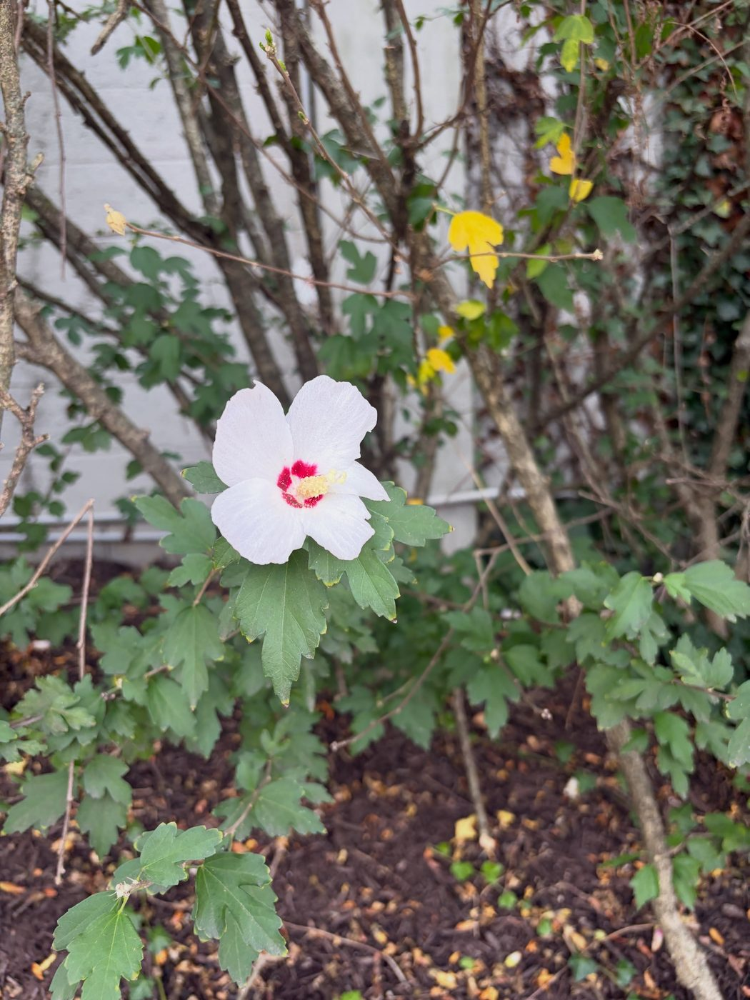

Engineering
- Python
- BM25
BM25 notes search
Stdlib Python keyword search over local markdown. Tokenise, index, rank. No API keys.
Jade Zhao · Informatics · Indiana University
Software engineering, human-centred AI, and digital accessibility.
I'm an Informatics student at Indiana University. I like figuring out how systems work, building practical software, and making complicated ideas easier for other people to use.
Engineering
Stdlib Python keyword search over local markdown. Tokenise, index, rank. No API keys.
Accessibility
Need: inspect townofnashville.org against WCAG, write findings, hand off. I am team lead / co-lead under the Serve IT lead role. Live edits stay with the town.
AI research
Student project lead at Luddy. High-level public work on useful business interfaces when AI communicates like a person. No launch claim.
Client work
Need: a site and order path staff can keep. Customer HTML on a Google Site, Clover for orders, repo with alt text and posting guides.
Field notes for things I am still learning in public. Finished notes only. Empty until I have a piece I will stand behind.
